Subaru Natsuki was just trying to get to the convenience store but wound up summoned to another world.
He encounters the usual things--life-threatening situations, silver haired beauties, cat fairies--you know, normal stuff.
All that would be bad enough, but he's also gained the most inconvenient magical ability of all--time travel,
but he's got to die to use it. How do you repay someone who saved your life when all you can do is die?
Price: €12.99 (inc. btw)
Volume 2
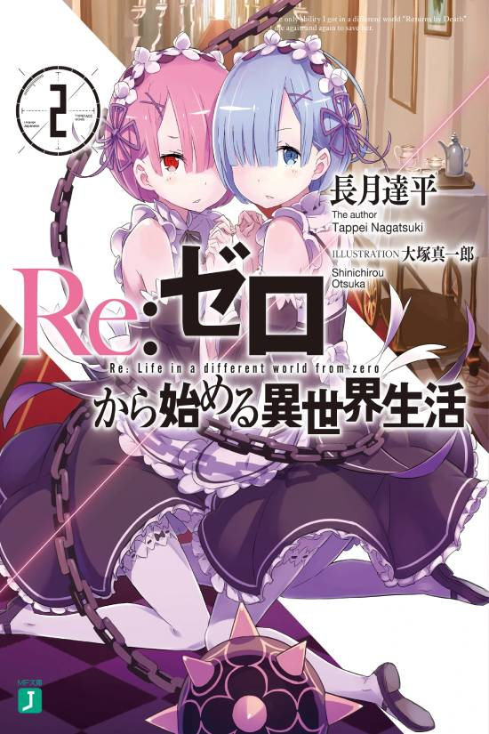
Breaking free of his death loop in the royal city, Subaru awakes in an opulent mansion, being tended to by the twin maids Ram and Rem.
After sustaining terrible injuries, he has been taken to the home of the Margrave Roswaal, Emilia's guardian.
The two maids, along with the young librarian Beatrice, are the sole guardians of the mansion's forbidden library,
but their quiet, peaceful days come to a violent end when another cycle of death begins! Subaru is the only one who
remembers the time he's spent with the people he cares about, but will he be able to save them?
Price: €12,50 (inc. btw)
Volume 3
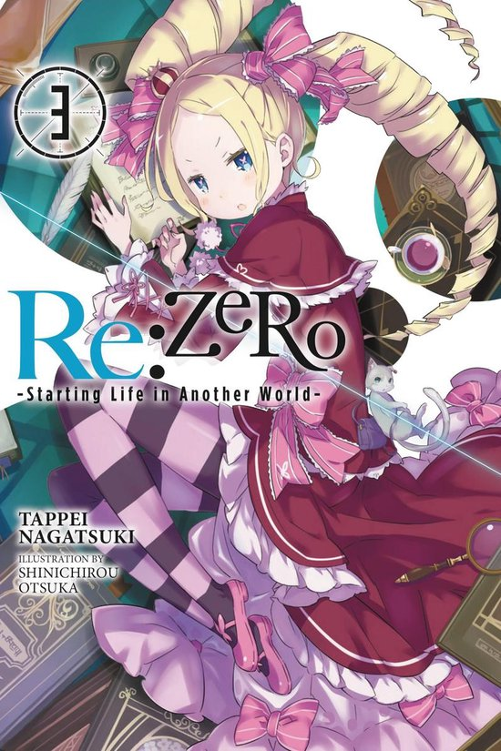
Let's get this story moving. Alongside the people most important to him, a boy goes out to meet the same sunrise once more.
Strengthening his resolve, Subaru returns to his first day in the mansion. Repeating his loop in the Roswaal household armed with his memories,
Subaru attempts to only make the optimal decisions to avoid another tragedy, but his fear and obsession with evading death and failure are slowly
warping him. While Subaru slowly falls apart trying to save everyone...who will save Subaru...?
Price: €12,50 (inc. btw)
Volume 4
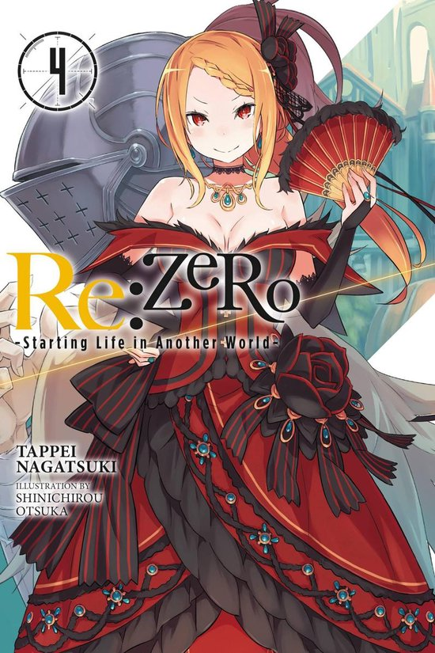
At long last, Subaru can finally enjoy a breather...until an envoy visits to discuss the royal selection.
Determined to help Emilia win the throne, Subaru accompanies her to the capital, but Emilia herself stubbornly refuses his assistance.
As the tension grows between the royal candidates, so does the friction in the pair's relationship. Has Subaru's devotion gone too far?
Price: €11,99 (inc. btw)
Volume 5
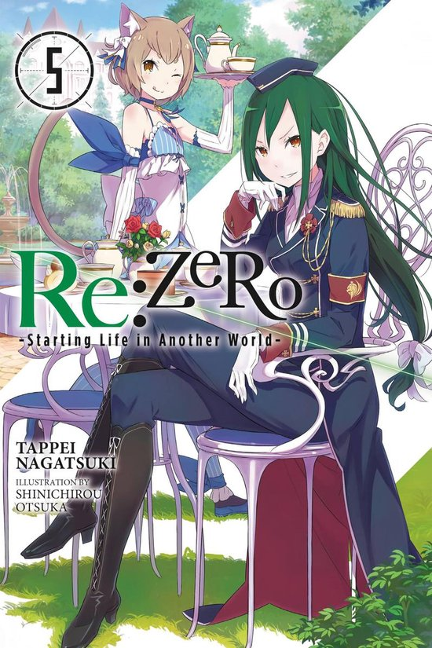
Subaru has really made a mess of things this time. After getting into a fight with the girl of his dreams, Subaru is stuck in the Karsten estate
with Rem while Emilia heads home without him. Consumed by a sense of powerlessness, he spends his time desperately training--all the while wondering,
"What's the point?" Is there any reason for him to struggle at all? But while he grapples with his inner demons, the Witch Cult may no longer be
content to sit back...
Price: €8,55 (inc. btw)
Volume 6
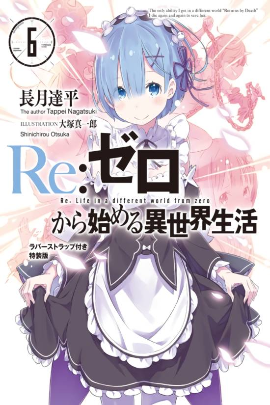
After suffering terribly at the hands of Petelgeuse, the Archbishop of Sloth, Subaru has returned once more to the capital with his ability,
Return by Death. Swearing revenge, he'll need to find allies and borrow their strength to strike back at the Witch Cult and save Emilia.
But how will he manage that when he has nothing to offer, powerless as he is...?
Price: €8,55 (inc. btw)
Volume 7
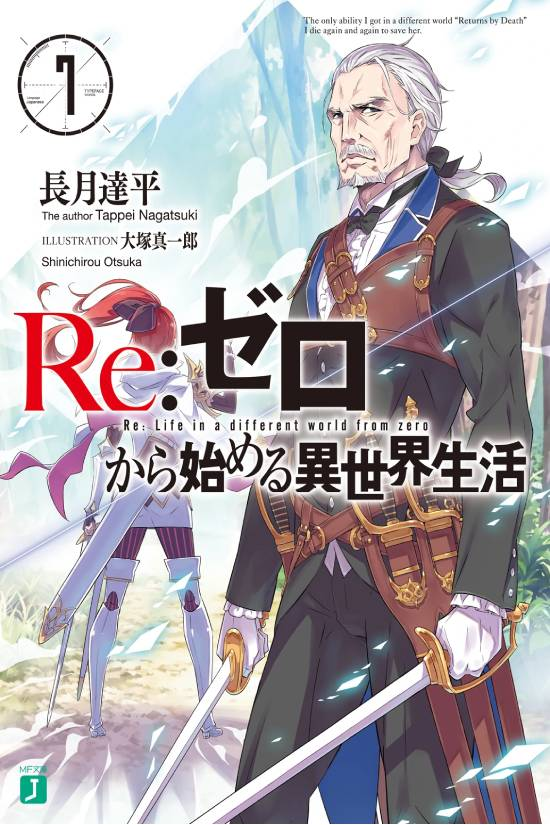
After maneuvering through negotiations and avoiding more horrific deaths, Subaru is ready to bring the fight to the White Whale!
But will it really all go according to plan when nothing else has?
Price: €10,50 (inc. btw)
Volume 8
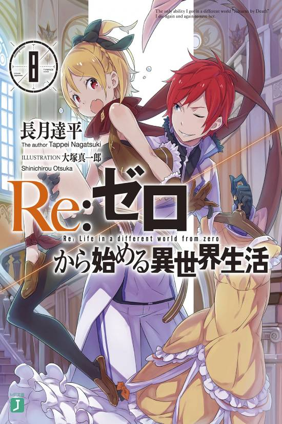
Having overcome the ferocious battle with the fearsome White Whale, Subaru Natsuki returns to the Mathers domain.
With the subjugation force that overcame the deadly combat, and the addition of Julius, their common history reconciled, together they clash
with the Witch Cultists under the command of Bishop of the Deadly Sins, Petelgeuse Romanée-Conti. To thwart the vile schemes of "Sloth" aimed at
Emilia and the others, avoid the tragedy he has witnessed multiple times, and to defy Fate itself, Subaru's "Return by Death" experiences open the
way forward-!
Price: €11,99 (inc. btw)
Volume 9
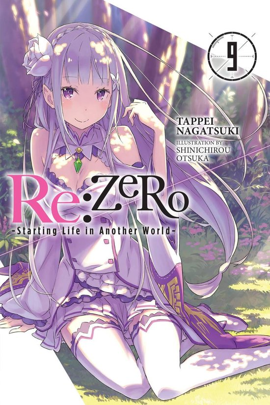
Having lost his deadly duel with Petelgeuse Romanée-Conti, Subaru Natsuki goes back in time once more. Subaru returns to the world and,
yet to shake off the effects of the ferocious battle, works with his allies to weave a new strategy - all to foil the wicked plans of the
body-hopping Bishop of the Deadly Sins. Emilia, remaining behind in Roswaal Manor, also realizes that something lurks in the vicinity of
the mansion. She urges the populace to take refuge.
Price: €12,99 (inc. btw)
Volume 10
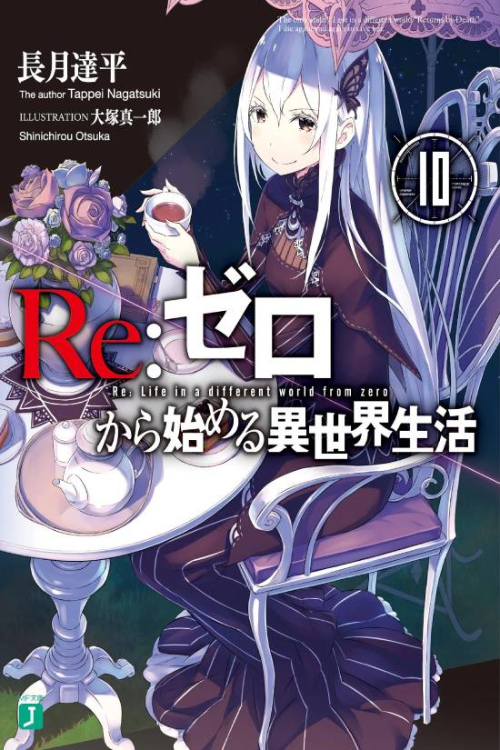
With the Witch Cult and the Archbishop of Sloth defeated, Subaru Natsuki is finally reunited with Emilia. Overcoming their bitter parting,
the two manage to reconcile only for new troubles to take center stage. Even though the coast is now clear, half of the villagers who escaped
have yet to return. Hoping to meet up with Roswaal, Ram, and the missing residents of Irlam, Subaru and the others head toward the Sanctuary.
Waiting for them inside are the unwelcoming inhabitants of the Sanctuary and a very suspiciously amused Roswaal.
Price: €12,99 (inc. btw)
✯EX series✯
EX Volume 1
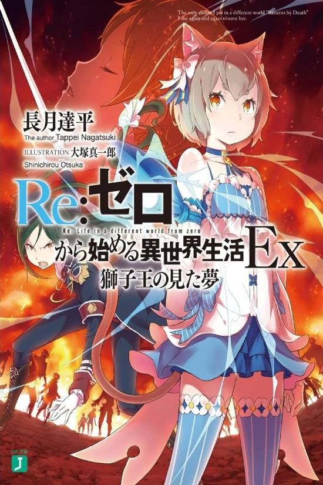
During the royal selection, Duchess Crusch Karsten declared her plans for the Dragon Kingdom of Lugunica:
to destroy the covenant with the Dragon and rebuild the nation stronger than before. But where did her radical vision come from?
Why does she want to change the country so badly? The answer lies in her past...
Price: €7,- (inc. btw)
EX Volume 2
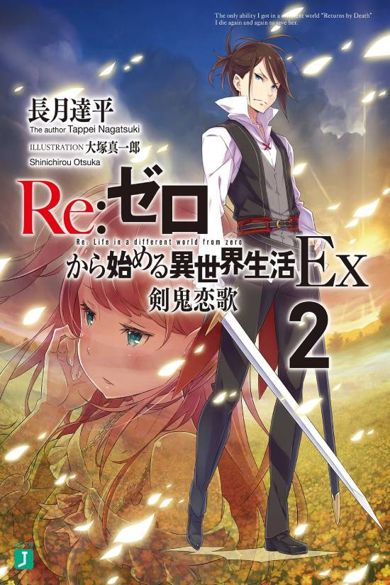
Long ago, a great war raged between the royal military of Lugunica and the demi-humans. On that battlefield, a noteworthy young warrior was born---Wilhelm Trias,
dubbed the Sword Demon. But despite his skill with a blade, the boy would need to grow much more before he could become a true hero. This is the story of a
legendary swordsman--and how he learned to love.
Price: €7,- (inc. btw)
EX Volume 3
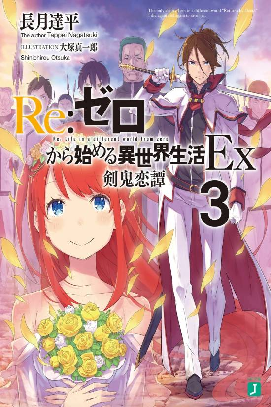
After overcoming more obstacles than any couple should have to endure, Wilhelm and Theresia can finally be together.
The hopeful bride and groom soon discover, though, that wedded bliss comes with trials all its own. After a shaky
ceremony and an overly crowded honeymoon, the Sword Demon and Sword Saint get to enjoy carefree days tackling mundane
headaches and the impositions of their loved ones-but true danger lurks around the corner when the world cries out for the
demon of the sword once more!
Price: €7,- (inc. btw)
EX Volume 4
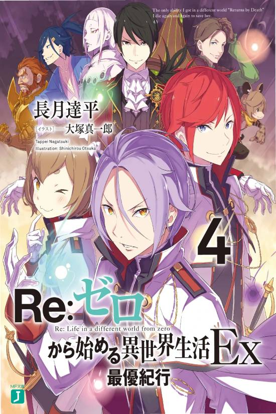
When the Kingdom of Lugnica is shaken by the death of the royal family, as the knights of the royal guard rush to defend the kingdom,
they are given the responsibility to accompany and defend a diplomatic mission to the neighboring country "The Sacred Empire of Vollachia".
Since it's founding, the empire has repeatedly clashed with the kingdom. In the empire, that lives by the philosophy of the strong that the
strong prey on the weak, and only the fit survive, the trio of Julius, Ferris, and Reinhard, will step into the darkness of the empire where
the scent of blood swirls.
Price: €7,- (inc. btw)
✯Blue-ray✯
Season 1, part 1
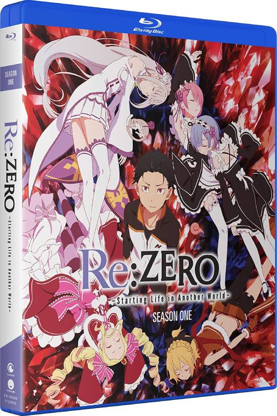
Re:ZERO Starting Life in Another World Season 1, Part 1 Blu-ray/DVD contains episodes 1-12 of the anime series directed by Masaharu Watanabe.
Price: €45,- (inc. btw)
Season 1, part 2
Re:ZERO Starting Life in Another World Season 1, Part 2 Blu-ray/DVD contains episodes 13-25 of the anime series directed by Masaharu Watanabe.